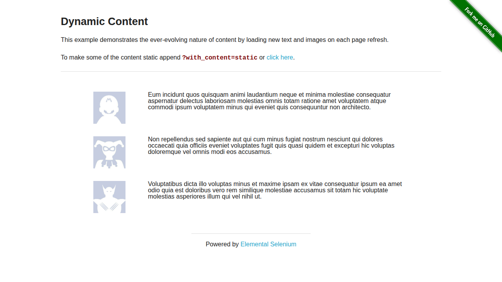
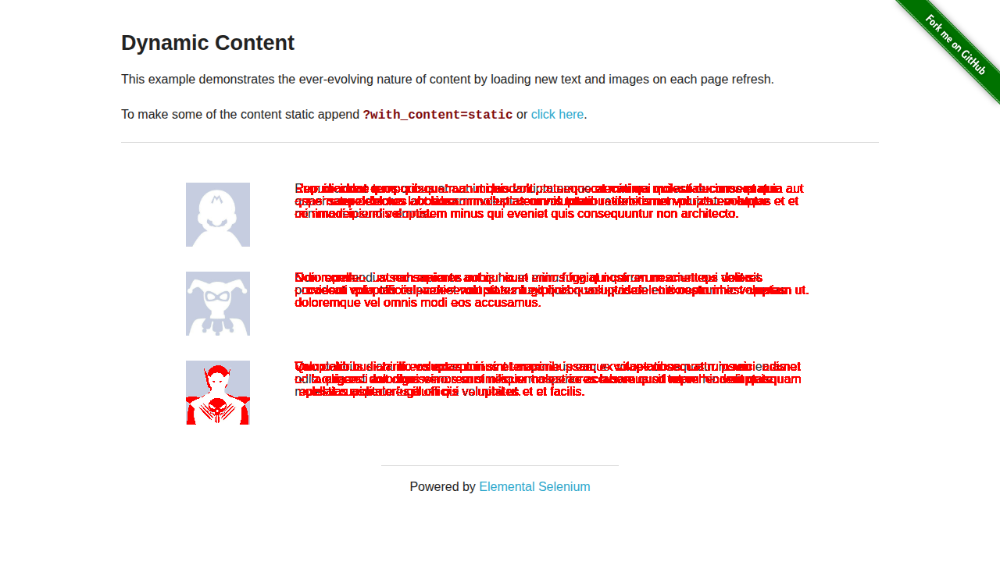

A synthetic monitor that reads a page like a QA engineer, not a selector — then forks a Solari Sandbox to catch what reading can't.
A page can say everything it's supposed to say and still look broken. On this run, the text check said PASS — twice — while a Solari Sandbox, diffing pixels in a disposable microVM, caught 4.08% of the page quietly drifting underneath it.


A real Solari Chrome session runs the steps — fill, click, wait — and reads the page's own visible text, not its markup.
A deterministic heuristic decides pass/fail from that text. No vendor key required — an optional Claude-vision judge is one env var away.
One disposable Solari Sandbox, reused across the run, pixel-diffs the screenshot against the last known-good baseline.
Verdict, diff %, and evidence get written to an append-only ledger. A baseline only advances on a pass.
| Journey | Backend | Verdict | Diff | Duration |
|---|---|---|---|---|
| login-success | browser | PASS | 0.0% | 4078ms |
| login-invalid-credentials | browser | PASS | 0.0% | 3891ms |
| dynamic-content-visual-drift | browser | PASS | 4.08% | 3155ms |
| desktop-notepad-smoke | desktop | PASS | 0.01% | 7467ms |
| _demo_intentional_failure | browser | FAIL | — | 4250ms |
| login-success | browser | PASS | — (baseline) | 4016ms |
| login-invalid-credentials | browser | PASS | — (baseline) | 4171ms |
| dynamic-content-visual-drift | browser | PASS | — (baseline) | 3094ms |
| desktop-notepad-smoke | desktop | PASS | — (baseline) | 7359ms |
| _demo_intentional_failure | browser | FAIL | — | 4282ms |